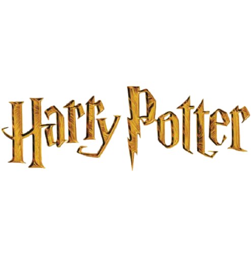

Mundo mágico de
Harry Potter é uma série de filmes britânico-americana baseada na série de livros homônima da escritora J. K. Rowling. A série é distribuída pela Warner Bros. e consiste em oito filmes, iniciando com Harry Potter e a Pedra Filosofal (2001) e finalizando com Harry Potter e as Relíquias da Morte - Parte 2 (2011). Além dos oito filmes, a partir de 2016 mais cinco filmes serão lançados passados no mesmo universo, sob a chancela Mundo Bruxo de J. K. Rowling ("J. K. Rowling's Wizarding World"), começando por Animais Fantásticos e Onde Habitam. Uma das 20 Maiores série cinematográfica de maior bilheteria de todos os tempos, com US $9.1 bilhões em receitas em todo o mundo, perdendo o posto de primeiro e segundo lugar apenas para o Universo Cinematográfico Marvel e para Star Wars.
Todos os filmes se encontram na lista dos 100 filmes de maior bilheteria da história (em dólares e sem ajuste de inflação), sendo Harry Potter e as Relíquias da Morte - Parte 2 o filme da franquia que mais arrecadou nas bilheterias, ocupando o décimo terceiro no ranking mundial. As gravações iniciaram na Califórnia, nos estúdios de Hollywood. Apesar da escritora ser britânica, a saga cinematográfica de Harry Potter foi completamente produzida por Hollywood, com edições feitas na Califórnia e efeitos visuais produzidos pela indústria hollywoodiana.
A série foi produzida por David Heyman e tem Daniel Radcliffe, Rupert Grint e Emma Watson como os três personagens principais, Harry Potter, Rony Weasley e Hermione Granger, respectivamente, além de Eddie Redmayne que é o protagonista de Animais Fantásticos e Onde Habitam como Newt Scammander. Quatro diretores trabalharam na série: Chris Columbus, Alfonso Cuarón, Mike Newell e David Yates. A produção levou mais de dez anos para ser concluída, com o Arco de história principal seguindo a busca de Harry Potter para superar seu conflito com Lord Voldemort.
Harry Potter e as Relíquias da Morte, o sétimo e último livro da série, foi adaptado em dois filmes: a Parte 1 foi lançada em novembro de 2010 e a Parte 2 em julho de 2011. Daniel Radcliffe (Harry Potter), Rupert Grint (Rony Weasley), Emma Watson (Hermione Granger), Bonnie Wright (Gina Weasley), Robbie Coltrane (Rúbeo Hagrid), Alan Rickman (Severo Snape), Tom Felton (Draco Malfoy), Matthew Lewis (Neville Longbottom), Devon Murray (Simas Finnigan), Alfie Enoch (Dino Thomas), James Phelps (Fred Weasley), Oliver Phelps (Jorge Weasley), Geraldine Somerville (Lílian Potter) e Joshua Herdman (Gregório Goyle) atuaram em todos os filmes da série.
Início
No final de 1997, o escritório do produtor de cinema David Heyman, de Londres, recebeu uma cópia do primeiro livro que se tornaria a série de sete livros de J. K. Rowling. O livro, Harry Potter e a Pedra Filosofal, foi enviado a uma estante de baixa prioridade, onde foi descoberto por um secretário que o leu e deu a Heyman com um comentário positivo. Consequentemente, Heyman, que inicialmente não gostou do título, leu o livro e ficou impressionado com o trabalho de Rowling, e começou o processo que levaria ao título de franquia de maior sucesso cinematográfico de todos os tempos.

Entusiasmado, Heyman vendeu o direito dos quatro primeiros livros de Harry Potter para a Warner Bros. em 1999, por £ 1.000.000 (US$ 2,000,000). Rowling pediu que o elenco principal deveria ser estritamente britânico, permitindo, no entanto, a inclusão de muitos atores irlandeses, como Richard Harris (Alvo Dumbledore nos 1º e 2º filmes), e a fundição de franceses e orientais europeus em Harry Potter e o Cálice de Fogo, onde personagens do livro são especificados como tal. A autora estava hesitante em vender os direitos, porque ela "não queria dar-lhes o controle sobre o resto da história".
Embora Steven Spielberg fosse inicialmente negociado para dirigir o primeiro filme, ele recusou a oferta. Spielberg queria que a adaptação fosse um filme de animação, com o ator americano Haley Joel Osment para fornecer a voz de Harry Potter. Spielberg afirmou que, em sua opinião, não havia qualquer expectativa de lucro em fazer o filme. "É apenas um slam dunk (expressão para "enterrar a bola"). É como retirar um bilhão de dólares e colocá-lo em suas contas bancárias pessoais. Não há desafio". Após Spielberg ser deixado de lado, começaram especulações com outros diretores, incluindo: Chris Columbus, Terry Gilliam, Jonathan Demme, Mike Newell, Alan Parker, Wolfgang Petersen, Rob Reiner, Tim Robbins, Brad Silberling, e Peter Weir. Petersen e Reiner foram tirados da corrida em março de 2000. Em seguida, a lista foi reduzida a Silberling, Columbus, Parker e Gilliam. A primeira escolha de Rowling foi Terry Gilliam, no entanto, em 28 de março de 2000, Columbus foi contratado como diretor do filme, com a Warner Bros. citando seu trabalho em filmes de família, tais como Home Alone e Mrs. Doubtfire como influências para a sua decisão.
Steven Kloves foi escolhido para escrever o roteiro do primeiro filme, e classificou a adaptação do livro como "difícil". Kloves foi enviado a várias sinopses de livros propostos como adaptações para o cinema, mas Harry Potter foi o único que "saltou" para ele. Ele saiu para comprar o livro e tornou-se um fã imediato. Ao falar com a Warner Bros. afirmou que o filme tinha de ser britânico, e tinha de ser fiel aos personagens. David Heyman foi confirmado para produzir o filme e Rowling teve um grande controle criativo para o filme, já que que Colombo não se importava. A Warner Bros. tinha inicialmente planejado lançar o primeiro filme em 4 de julho de 2001. Eventualmente, devido a limitações de tempo, a data foi adiada para 16 de novembro de 2001.
Produção
As filmagens da série começaram no Leavesden Studios, em setembro de 2000 e terminaram em dezembro de 2010, com a pós-produção do filme final durando até o verão de 2011. O Leavesden Studios foi a principal base para as filmagens de Harry Potter e foi aberto ao público em 2012 (renomeado como Warner Bros. Studios, Leavesden).
Filmes do Universo Harry Potter
| Filme | Data de lançamento | Diretor(es) | Roteirista(s) | Produtor(es) |
|---|---|---|---|---|
| Harry Potter 1 | 16 de novembro de 2001 | Chris Columbus | Steve Kloves | David Heyman |
| Harry Potter 2 | 15 de novembro de 2002 | Chris Columbus | Steve Kloves | David Heyman |
| Harry Potter 3 | 31 de maio de 2004 | Alfonso Cuarón | Steve Kloves | David Heyman, Chris Columbus e Mark Radcliffe |
| Harry Potter 4 | 18 de novembro de 2005 | Mike Newell | Steve Kloves | David Heyman |
| Harry Potter 5 | 11 de julho de 2007 | David Yates | Michael Goldenberg | David Heyman e David Barron |
| Harry Potter 6 | 15 de julho de 2009 | David Yates | Steve Kloves | David Heyman e David Barron |
| Harry Potter 7 | 19 de novembro de 2010 | David Yates | Steve Kloves | David Heyman, David Barron e J. K. Rowling |
| Harry Potter 8 | 15 de julho de 2011 | David Yates | Steve Kloves | David Heyman, David Barron e J. K. Rowling |
| Animais Fantásticos 1 | 18 de novembro de 2016 | David Yates | J. K. Rowling | David Heyman, J. K. Rowling, Steve Kloves e Lionel Wigram |
| Animais Fantásticos 2 | 16 de novembro de 2018 | David Yates | J. K. Rowling | David Heyman, J. K. Rowling, Steve Kloves e Lionel Wigram |
| Animais Fantásticos 3 | 15 de abril de 2022 | David Yates | J. K. Rowling e Steve Kloves | David Heyman, J. K. Rowling, Steve Kloves, Lionel Wigram e Tim Lewis |
David Heyman produziu todos os filmes da série, enquanto David Barron entrou para a série como produtor executivo em Câmara Secreta e Cálice de Fogo. Mais tarde ele foi nomeado produtor nas últimos três adaptações. Chris Columbus foi produtor executivo dos dois primeiros filmes ao lado de Mark Radcliffe e Michael Barnathan, mas tornou-se produtor do terceiro filme ao lado de Heyman e Radcliffe. Produtores executivos incluem Tanya Seghatchian e Lionel Wigram. J. K. Rowling, autora da série, foi convidada a ser produtora em Cálice de Fogo, mas recusou. No entanto, ela aceitou o papel nas duas partes de Relíquias da Morte. O sexto filme da série, Enigma do Príncipe, foi o filme mais caro produzido a partir de 2009. A Warner Bros. dividiu o sétimo e último livro da série, Relíquias da Morte, em duas partes para o cinema. As duas partes foram filmadas simultaneamente entre o início de 2009 e o verão de 2010, com a realização de algumas filmagens em 21 de dezembro de 2010; data esta que marcou o fim das filmagens de Harry Potter. Heyman afirmou que Relíquias da Morte "foi filmado como um filme", mas foi liberado em dois longas.
Tim Burke, supervisor de efeitos visuais da série, disse que a produção de Harry Potter, "foi esta grande família, eu acho que havia mais de 700 pessoas que trabalham em Leavesden, uma indústria em si." David Heyman disse: "Quando o primeiro filme estreou, de maneira nenhuma eu achei que faria oito filmes. Isso não parecia possível, até depois que tínhamos feito o quarto." Nisha Parti, o consultor de produção no primeiro filme, disse que Heyman "fez o primeiro filme muito do jeito que o estúdio [Warner Bros.] queria", mas após o sucesso do filme, foi dado a ele "mais liberdade".
Um dos objetivos dos cineastas a partir do início da produção foi o de desenvolver a maturidade dos filmes. Chris Columbus afirmou: "Nós percebemos que esses filmes se tornam progressivamente mais escuros. Novamente, não sabíamos o quanto escuro, mas percebemos que, como as crianças crescem, os filmes ficam um pouco mais ousados e mais darker". Isso ocorreu com os seguintes três diretores que iriam trabalhar na série, nos anos seguintes, com os filmes começam a lidar com questões como a morte, traição, preconceito e corrupção política.
Elenco
O elenco principal da série é composto por Daniel Radcliffe, Emma Watson e Rupert Grint, que interpretam Harry Potter, Hermione Granger e Rony Weasley, respectivamente. Os três foram escolhidos após um longo processo de audição que começou em 2000. A Warner Bros. queria que o elenco fosse britânico, mas permitiu a inclusão de atores irlandeses e franceses. A escolha de Radcliffe foi feita por David Heyman, que viu o ator em uma peça de teatro e ficou impressionado com seu desempenho.
Emma Watson foi escolhida após uma extensa busca por uma atriz que pudesse interpretar Hermione Granger. Ela foi selecionada entre mais de 10.000 candidatas. Rupert Grint, por sua vez, enviou um vídeo de audição onde interpretava Rony Weasley e foi escolhido para o papel. O trio principal se tornou muito próximo durante as filmagens e continuou a trabalhar juntos ao longo de toda a série.
Além do trio principal, o elenco inclui atores renomados como Alan Rickman (Severo Snape), Maggie Smith (Minerva McGonagall), Robbie Coltrane (Rúbeo Hagrid) e Ralph Fiennes (Lord Voldemort). Muitos desses atores se tornaram ícones da série e contribuíram para o sucesso dos filmes.
A série também introduziu novos personagens ao longo dos filmes, como Eddie Redmayne como Newt Scamander em "Animais Fantásticos e Onde Habitam". A escolha de Redmayne foi bem recebida, e ele continuou a interpretar o personagem em sequências subsequentes.
Cronologia
Animais Fantásticos e Onde Habitam (2016)
Baseado no livro Animais Fantásticos e Onde Habitam, lançado em 2001, o filme é o começo das aventuras do escritor fictício Newt Scamander, interpretado por Eddie Redmayne, que setenta anos antes da saga de Harry Potter, enfrentou e conheceu inúmeras criaturas para escrever um livro acadêmico sobre o assunto. O primeiro filme, Fantastic Beasts and Where to Find Them, é o primeiro passado fora do Reino Unido, com a história tendo Scamander viajando para os Estados Unidos durante a Grande Depressão.
Animais Fantásticos: Os Crimes de Grindelwald (2018)
Seguindo a saga de cinco filmes desenvolvida sobre a história do autor fictício de Animais Fantásticos e Onde Habitam, lançado em 2001 por J. K. Rowling, o segundo filme acompanha Newt Scamander e Alvo Dumbledore na tentativa de impedir os planos Gerardo Grindelwald, que segue para Paris após fugir da prisão bruxa. Em três semanas o filme superou a marca de US$ 500 milhões em bilheteria, sendo a menor da franquia até o momento.
Animais Fantásticos: Os Segredos de Dumbledore (2022)
O terceiro filme da saga Animais Fantásticos acompanha Alvo Dumbledore encarrega a Newt Scamander e seus amigos uma missão que leva a um confronto com o exército de Grindelwald. O filme se situa na década de 1930 e leva ao envolvimento do Mundo Mágico na Segunda Guerra Mundial. Ele explora as comunidades mágicas no Butão, Alemanha e China, além de locais previamente estabelecidos, incluindo Estados Unidos e Reino Unido. Teve uma bilheteria total de US$ 365 milhões, sendo a menor do Wizarding World.
Harry Potter e a Pedra Filosofal (2001)
Harry Potter é um rapaz aparentemente normal que mora com seus terríveis tios trouxas (pessoas não-mágicas), os Dursley, em Surrey, um subúrbio localizado em Londres. No seu 11º aniversário descobre, através de um misterioso homem chamado Rúbeo Hagrid, que ele é, na verdade, um bruxo. Ele também acaba por descobrir que é muito famoso no mundo mágico por ser aquele a quem todos chamam de "O menino que sobreviveu", já que ele foi a única pessoa no mundo que sobreviveu ao ataque do terrível bruxo Voldemort, e isso quando ele era apenas um bebê. Hagrid conta a Harry que ele foi aceito na Escola de Magia e Bruxaria de Hogwarts, e que deve escolher se quer ficar com os Dursley ou ir para a escola. Já no Expresso de Hogwarts, Harry conhece Rony Weasley e Hermione Granger, e juntos descobrem sobre a Pedra Filosofal, que produz o Elixir da Vida, que concede a imortalidade. Eles enfrentam desafios para impedir que Voldemort retorne ao poder.
Harry Potter e a Câmara Secreta (2002)
Depois de férias aborrecidas na casa dos tios trouxas, está na hora de Harry Potter voltar a estudar. Um elfo doméstico, Dobby, chega a seu encontro para alertá-lo a não voltar, pois correrá grandes perigos se voltar para Hogwarts. Coisas estranhas acontecem, no entanto, para dificultar o regresso de Harry. Persistente e astuto, nosso herói não se deixa intimidar pelos obstáculos e, com a ajuda de seus fiéis amigos, começa o ano letivo na Escola de Magia e Bruxaria de Hogwarts. As novidades não são poucas, e Harry descobre mais sobre seu misterioso passado e sobre o do seu grande inimigo, Lord Voldemort.
Harry Potter e o Prisioneiro de Azkaban (2004)
O terceiro ano na Escola de Magia e Bruxaria de Hogwarts se aproxima. Porém, o assassino Sirius Black (Gary Oldman) fugiu da prisão de Azkaban e tudo indica que ele está atrás de Harry. Para proteger Hogwarts são enviados Dementadores, estranhos seres que sugam a energia vital de quem se aproxima deles. Enquanto ocorrem acontecimentos estranhos, Harry vai descobrindo um pouco mais de sua vida.
Harry Potter e o Cálice de Fogo (2005)
Durante o quarto ano de Harry, a Marca Negra aparece no céu após um ataque dos Comensais da Morte na Copa Mundial de Quadribol, e Hogwarts é anfitriã de um evento lendário: o Torneio Tribruxo. Três escolas europeias participam do torneio, com três "campeões" representantes de cada escola nas tarefas mortais. O Cálice de Fogo escolhe Fleur Delacour, Vítor Krum e Cedrico Diggory para competir uns contra os outros. No entanto, curiosamente, o nome de Harry também é produzido a partir do Cálice e faz dele um quarto campeão, resultando em um encontro e renascimento de Lord Voldemort.
Harry Potter e a Ordem da Fênix (2007)
O quinto ano de Harry começa com um ataque de dementadores em Little Whinging. Mais tarde, ele descobre que o Ministério da Magia nega o retorno de Lord Voldemort, além de ser atormentado por pesadelos perturbadores e realistas, enquanto a Professora Umbridge, uma representante do Ministro da Magia, Cornélio Fudge, toma o cargo de Defesa Contra as Artes das Trevas. Harry se torna consciente de que Voldemort está atrás de uma profecia que revela: "nenhum poderá viver enquanto o outro sobreviver". Portanto, começa a rebelião envolvendo os alunos de Hogwarts, a organização secreta Ordem da Fênix, o Ministério da Magia, e os Comensais da Morte.
Harry Potter e o Enigma do Príncipe (2009)
No sexto ano de Harry em Hogwarts, Lord Voldemort e seus Comensais da Morte estão aumentando seu terror nos mundos bruxo e trouxa. O diretor Alvo Dumbledore convence seu velho amigo Horácio Slughorn para retornar a Hogwarts como professor de poções. Há uma razão mais importante, no entanto, para a volta de Slughorn. Harry encontra um livro escolar estranhamente anotado, inscrito "Propriedade do Príncipe Mestiço". Draco Malfoy se esforça para realizar uma ação destinada por Voldemort, enquanto Dumbledore e Harry secretamente trabalham juntos a fim de descobrir o método para destruir o Lorde das Trevas uma vez por todas.
Harry Potter e as Relíquias da Morte – Parte 1 (2010)
Depois de eventos inesperados no final do ano anterior, Harry, Rony e Hermione são confiados a uma missão para encontrar e destruir as Horcruxes de Voldemort. Deveria ser o último ano em Hogwarts, mas o colapso do Ministério da Magia e ascensão de Voldemort ao poder os impede de participar. Eles descobrem o real significado das Relíquias da Morte, que são, a Capa da Invisibilidade, a Pedra da Ressurreição e a Varinha das Varinhas. O trio passa por uma longa aventura, com muitos obstáculos em seu caminho, incluindo os Comensais da Morte, os Sequestradores, as misteriosas Relíquias da Morte e a conexão de Harry com a mente do Lorde das Trevas se tornando cada vez mais forte.
Harry Potter e as Relíquias da Morte – Parte 2 (2011)
Depois de destruir mais uma das Horcruxes (o Medalhão de Sonserina) e descobrir o significado das três Relíquias da Morte, Harry, Rony e Hermione continuam a procurar as outras Horcruxes em uma tentativa de liquidar Voldemort, que já obteve a Varinha das Varinhas. O Lorde das Trevas descobre a caça de Harry e lança um ataque contra a escola de Hogwarts, onde começa uma batalha contra as forças das trevas que ameaçam livrar o Mundo Mágico para alcançar o domínio dos puro-sangue.
Notas
- Michael Gambon substituiu Richard Harris como Dumbledore de Prisioneiro de Azkaban em diante após a morte de Harris.
- Toby Regbo interpretou Dumbledore na versão jovem.
- Colin Farrell interpreta Gellert Grindelwald em Animais Fantásticos e Onde Habitam sob o disfarce de Percival Graves, com Johnny Depp brevemente retratando o personagem sem o disfarce.
- Jamie Campbell Bower interpretou Grindelwald na versão jovem.
- O nome de Newt Scamander apareceu no Mapa do Maroto no filme Prisioneiro de Azkaban.
- Joshua Shea interpretou Scamander na versão jovem.